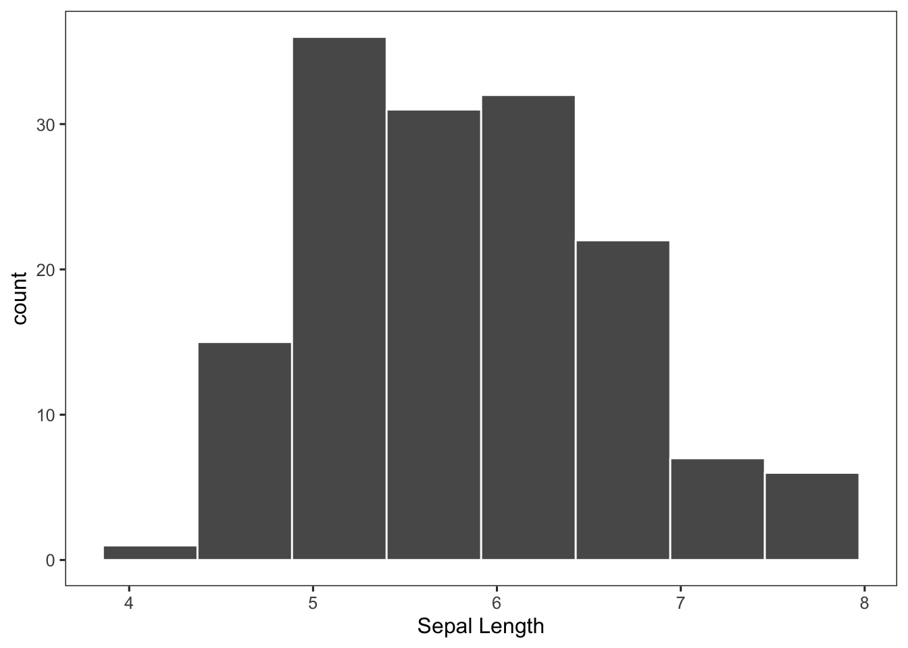
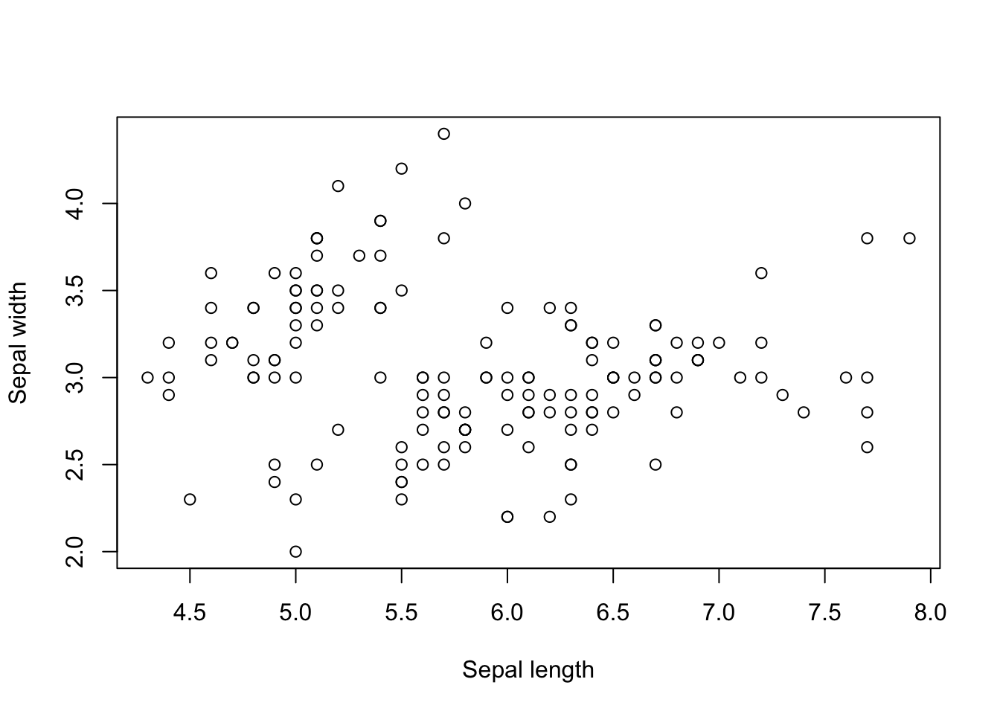
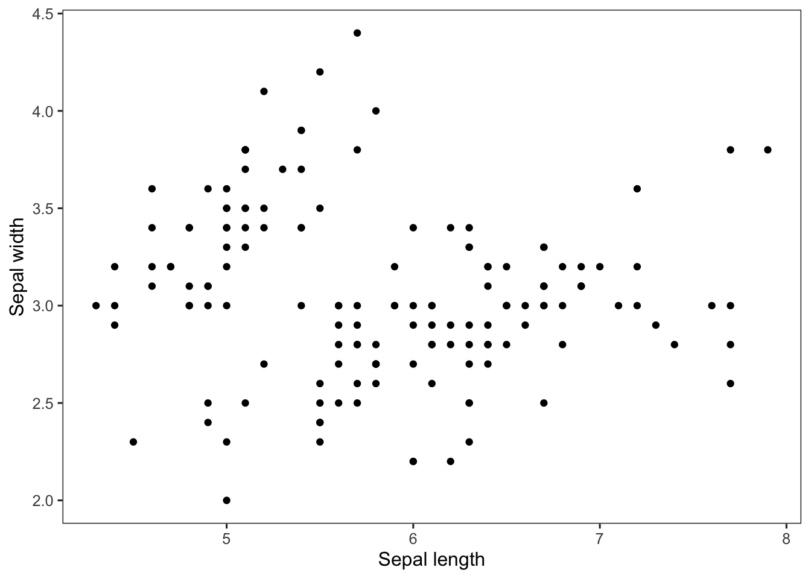

Chapter 2 R and exploratory data analysis
library(stfspack)
library(tidyverse)
theme_set(theme_bw(base_size = 12) +
theme(strip.background = element_blank(),
panel.grid = element_blank())) This chapter is about getting comfortable with R. Edge uses base R for data wrangling and plotting, but here I’ll also recreate the chapter exercises using the tidyverse. For a deeper dive into R and the tidyverse:
Data carpentry’s ecology lesson
R for data science
2.1 Inspecting the dataframe
## Sepal.Length Sepal.Width Petal.Length Petal.Width Species
## 1 5.1 3.5 1.4 0.2 setosa
## 2 4.9 3.0 1.4 0.2 setosa
## 3 4.7 3.2 1.3 0.2 setosa
## 4 4.6 3.1 1.5 0.2 setosa
## 5 5.0 3.6 1.4 0.2 setosa
## 6 5.4 3.9 1.7 0.4 setosa## Observations: 150
## Variables: 5
## $ Sepal.Length <dbl> 5.1, 4.9, 4.7, 4.6, 5.0, 5.4, 4.6, 5.0, 4.4, 4.9, 5.4, 4…
## $ Sepal.Width <dbl> 3.5, 3.0, 3.2, 3.1, 3.6, 3.9, 3.4, 3.4, 2.9, 3.1, 3.7, 3…
## $ Petal.Length <dbl> 1.4, 1.4, 1.3, 1.5, 1.4, 1.7, 1.4, 1.5, 1.4, 1.5, 1.5, 1…
## $ Petal.Width <dbl> 0.2, 0.2, 0.2, 0.2, 0.2, 0.4, 0.3, 0.2, 0.2, 0.1, 0.2, 0…
## $ Species <fct> setosa, setosa, setosa, setosa, setosa, setosa, setosa, …## Sepal.Length Sepal.Width Petal.Length Petal.Width
## Min. :4.300 Min. :2.000 Min. :1.000 Min. :0.100
## 1st Qu.:5.100 1st Qu.:2.800 1st Qu.:1.600 1st Qu.:0.300
## Median :5.800 Median :3.000 Median :4.350 Median :1.300
## Mean :5.843 Mean :3.057 Mean :3.758 Mean :1.199
## 3rd Qu.:6.400 3rd Qu.:3.300 3rd Qu.:5.100 3rd Qu.:1.800
## Max. :7.900 Max. :4.400 Max. :6.900 Max. :2.500
## Species
## setosa :50
## versicolor:50
## virginica :50
##
##
## 2.2 Histograms

# Tidyverse
iris %>%
ggplot(aes(Sepal.Length)) +
geom_histogram(bins = 8, col = "white") +
labs(x = "Sepal Length")
2.3 Summarising data
## setosa versicolor virginica
## 5.006 5.936 6.588## # A tibble: 3 x 2
## Species mean
## <fct> <dbl>
## 1 setosa 5.01
## 2 versicolor 5.94
## 3 virginica 6.59Note that the tidyverse output is a tibble (essentially a dataframe), which is a consistent feature of the tidy approach to data wrangling. Not that you can’t do this in base R with the aggregate function - which is how I used to do it BT (before tidyverse):
## Group.1 x
## 1 setosa 5.006
## 2 versicolor 5.936
## 3 virginica 6.588# You can check the output using str()
aggregate(iris$Sepal.Length, list(iris$Species), mean) %>% str()## 'data.frame': 3 obs. of 2 variables:
## $ Group.1: Factor w/ 3 levels "setosa","versicolor",..: 1 2 3
## $ x : num 5.01 5.94 6.592.4 Loops
## [1] 1
## [1] 2
## [1] 3## [1] 1## [1] setosa versicolor virginica
## Levels: setosa versicolor virginica## [1] 5.006
## [1] 5.936
## [1] 6.5882.5 Functions
## [1] 5.006
## [1] 5.936
## [1] 6.588## [1] 3.428
## [1] 2.77
## [1] 2.9742.6 Boxplots

# Tidyverse
iris %>%
ggplot(aes(Species, Sepal.Length)) +
geom_boxplot() +
labs(x = "Species", y = "Sepal length")
2.7 Scatterplots

# Tidyverse
iris %>%
ggplot(aes(Sepal.Length, Sepal.Width)) +
geom_point() +
labs(x = "Sepal length", y = "Sepal width")
With unique symbols for species:
# Base
plot(iris$Sepal.Length, iris$Sepal.Width,
xlab = "Sepal length", ylab = "Sepal width",
pch = as.numeric(iris$Species))
legend("topright", pch = c(1,2,3),
legend = c("setosa", "versicolor", "virginica"))
# Tidyverse
iris %>%
ggplot(aes(Sepal.Length, Sepal.Width, shape = Species)) +
geom_point() +
labs(x = "Sepal length", y = "Sepal width")
2.8 Exercise set 2-2
Repeat the above analyses (histogram, summarising data, boxplots) for
Petal.Width.Install and load a new package
gpairs. Run the following line of code. What do you see?
- Install and load the package
stfspackif you have not already done so.